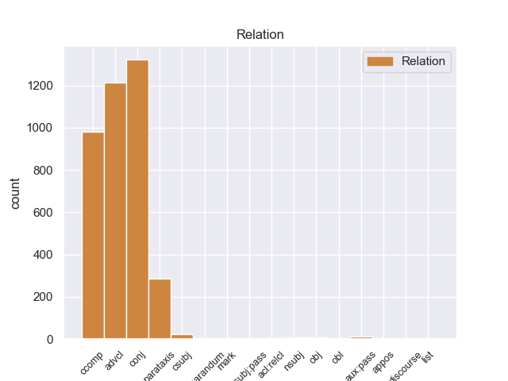
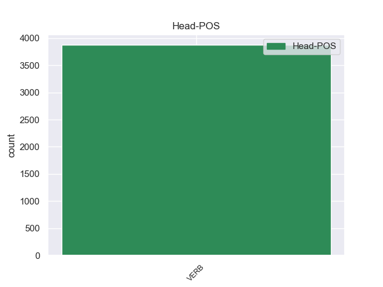
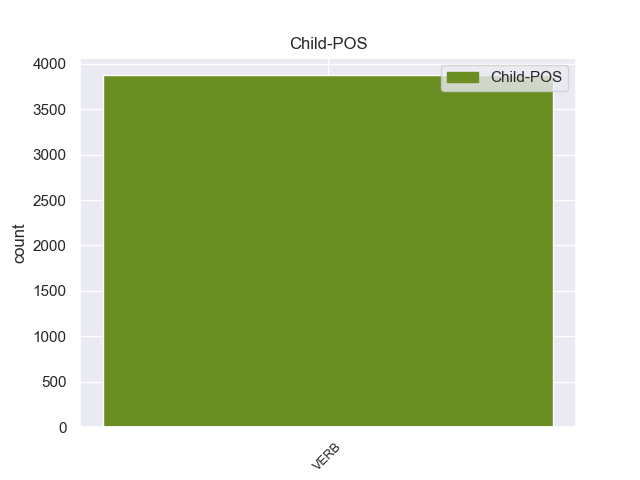

Distribution of features within this leaf



Morphosyntax Rules sorted by frequency.
- When the dependent token is the adverbial clause modifier(advcl) of the head token, and the head token is VERB and the dependent token is VERB, the Tense needs to be Pres.
1 Of _ _ _ _ 0 _ _ _
2 course _ _ _ _ 0 _ _ _
3 , _ _ _ _ 0 _ _ _
4 they _ _ _ _ 0 _ _ _
5 could _ _ _ _ 0 _ _ _
6 n't _ _ _ _ 0 _ _ _
7 call _ _ _ _ 0 _ _ _
8 him _ _ _ _ 0 _ _ _
9 either _ _ _ _ 0 _ _ _
10 to _ _ _ _ 0 _ _ _
11 ask _ _ _ _ 0 _ _ _
12 about _ _ _ _ 0 _ _ _
13 it _ _ _ _ 0 _ _ _
14 because _ _ _ _ 0 _ _ _
15 apparently _ _ _ _ 0 _ _ _
16 they _ _ _ _ 0 _ _ _
17 do _ _ _ _ 0 _ _ _
18 n't _ _ _ _ 0 _ _ _
19 keep _ _ _ _ 0 _ _ _
20 their _ _ _ _ 0 _ _ _
21 employees _ _ _ _ 0 _ _ _
22 ' _ _ _ _ 0 _ _ _
23 phone _ _ _ _ 0 _ _ _
24 numbers _ _ _ _ 0 _ _ _
25 ( _ _ _ _ 0 _ _ _
26 riiight _ _ _ _ 0 _ _ _
27 ) _ _ _ _ 0 _ _ _
28 , _ _ _ _ 0 _ _ _
29 so _ _ _ _ 0 _ _ _
30 I _ _ _ _ 0 _ _ _
31 would _ _ _ _ 0 _ _ _
32 have _ _ _ _ 0 _ _ _
33 to _ _ _ _ 0 _ _ _
34 return _ _ _ _ 0 _ _ _
35 on _ _ _ _ 0 _ _ _
36 Monday _ _ _ _ 0 _ _ _
37 ( _ _ _ _ 0 _ _ _
38 driving drive VERB VBG VerbForm=Ger 0 _ _ _
39 for _ _ _ _ 0 _ _ _
40 3 _ _ _ _ 0 _ _ _
41 days _ _ _ _ 0 _ _ _
42 now _ _ _ _ 0 _ _ _
43 with _ _ _ _ 0 _ _ _
44 no _ _ _ _ 0 _ _ _
45 wheel _ _ _ _ 0 _ _ _
46 lock _ _ _ _ 0 _ _ _
47 should _ _ _ _ 0 _ _ _
48 I _ _ _ _ 0 _ _ _
49 get get VERB VBP Mood=Ind|Tense=Pres|VerbForm=Fin 38 advcl 38:advcl _
50 a _ _ _ _ 0 _ _ _
51 flat _ _ _ _ 0 _ _ _
52 ) _ _ _ _ 0 _ _ _
53 . _ _ _ _ 0 _ _ _
1 I _ _ _ _ 0 _ _ _
2 will _ _ _ _ 0 _ _ _
3 never _ _ _ _ 0 _ _ _
4 return return VERB VB VerbForm=Inf 0 _ _ _
5 there _ _ _ _ 0 _ _ _
6 again _ _ _ _ 0 _ _ _
7 ( _ _ _ _ 0 _ _ _
8 and _ _ _ _ 0 _ _ _
9 now _ _ _ _ 0 _ _ _
10 have have VERB VBP Mood=Ind|Tense=Pres|VerbForm=Fin 4 conj 4:conj:and _
11 some _ _ _ _ 0 _ _ _
12 serious _ _ _ _ 0 _ _ _
13 doubts _ _ _ _ 0 _ _ _
14 about _ _ _ _ 0 _ _ _
15 the _ _ _ _ 0 _ _ _
16 quality _ _ _ _ 0 _ _ _
17 of _ _ _ _ 0 _ _ _
18 work _ _ _ _ 0 _ _ _
19 they _ _ _ _ 0 _ _ _
20 actually _ _ _ _ 0 _ _ _
21 performed _ _ _ _ 0 _ _ _
22 on _ _ _ _ 0 _ _ _
23 my _ _ _ _ 0 _ _ _
24 car _ _ _ _ 0 _ _ _
25 ) _ _ _ _ 0 _ _ _
26 . _ _ _ _ 0 _ _ _
1 Somehow _ _ _ _ 0 _ _ _
2 , _ _ _ _ 0 _ _ _
3 since _ _ _ _ 0 _ _ _
4 she _ _ _ _ 0 _ _ _
5 supposedly _ _ _ _ 0 _ _ _
6 does _ _ _ _ 0 _ _ _
7 n't _ _ _ _ 0 _ _ _
8 know _ _ _ _ 0 _ _ _
9 any _ _ _ _ 0 _ _ _
10 names _ _ _ _ 0 _ _ _
11 of _ _ _ _ 0 _ _ _
12 designers _ _ _ _ 0 _ _ _
13 / _ _ _ _ 0 _ _ _
14 dresses _ _ _ _ 0 _ _ _
15 , _ _ _ _ 0 _ _ _
16 after _ _ _ _ 0 _ _ _
17 I _ _ _ _ 0 _ _ _
18 told _ _ _ _ 0 _ _ _
19 her _ _ _ _ 0 _ _ _
20 the _ _ _ _ 0 _ _ _
21 designer _ _ _ _ 0 _ _ _
22 and _ _ _ _ 0 _ _ _
23 dress _ _ _ _ 0 _ _ _
24 name _ _ _ _ 0 _ _ _
25 of _ _ _ _ 0 _ _ _
26 the _ _ _ _ 0 _ _ _
27 one _ _ _ _ 0 _ _ _
28 I _ _ _ _ 0 _ _ _
29 was _ _ _ _ 0 _ _ _
30 comparing _ _ _ _ 0 _ _ _
31 , _ _ _ _ 0 _ _ _
32 she _ _ _ _ 0 _ _ _
33 knew know VERB VBD Mood=Ind|Tense=Past|VerbForm=Fin 0 _ _ _
34 " _ _ _ _ 0 _ _ _
35 exactly _ _ _ _ 0 _ _ _
36 which _ _ _ _ 0 _ _ _
37 dress _ _ _ _ 0 _ _ _
38 " _ _ _ _ 0 _ _ _
39 I _ _ _ _ 0 _ _ _
40 was _ _ _ _ 0 _ _ _
41 referring refer VERB VBG Tense=Pres|VerbForm=Part 33 ccomp 33:ccomp _
42 to _ _ _ _ 0 _ _ _
43 and _ _ _ _ 0 _ _ _
44 disagreed _ _ _ _ 0 _ _ _
45 with _ _ _ _ 0 _ _ _
46 my _ _ _ _ 0 _ _ _
47 observation _ _ _ _ 0 _ _ _
48 ; _ _ _ _ 0 _ _ _
49 she _ _ _ _ 0 _ _ _
50 said _ _ _ _ 0 _ _ _
51 that _ _ _ _ 0 _ _ _
52 the _ _ _ _ 0 _ _ _
53 bodice _ _ _ _ 0 _ _ _
54 did _ _ _ _ 0 _ _ _
55 come _ _ _ _ 0 _ _ _
56 as _ _ _ _ 0 _ _ _
57 low _ _ _ _ 0 _ _ _
58 as _ _ _ _ 0 _ _ _
59 the _ _ _ _ 0 _ _ _
60 one _ _ _ _ 0 _ _ _
61 I _ _ _ _ 0 _ _ _
62 had _ _ _ _ 0 _ _ _
63 on _ _ _ _ 0 _ _ _
64 . _ _ _ _ 0 _ _ _
1 Hmmm _ _ _ _ 0 _ _ _
2 , _ _ _ _ 0 _ _ _
3 she _ _ _ _ 0 _ _ _
4 says say VERB VBZ Mood=Ind|Number=Sing|Person=3|Tense=Pres|VerbForm=Fin 10 parataxis 10:parataxis SpaceAfter=No
5 , _ _ _ _ 0 _ _ _
6 Then _ _ _ _ 0 _ _ _
7 why _ _ _ _ 0 _ _ _
8 are _ _ _ _ 0 _ _ _
9 you _ _ _ _ 0 _ _ _
10 calling call VERB VBG Tense=Pres|VerbForm=Part 0 _ _ _
11 here _ _ _ _ 0 _ _ _
12 , _ _ _ _ 0 _ _ _
13 we _ _ _ _ 0 _ _ _
14 do _ _ _ _ 0 _ _ _
15 n't _ _ _ _ 0 _ _ _
16 go _ _ _ _ 0 _ _ _
17 past _ _ _ _ 0 _ _ _
18 broad _ _ _ _ 0 _ _ _
19 ? _ _ _ _ 0 _ _ _
1 The _ _ _ _ 0 _ _ _
2 teachers _ _ _ _ 0 _ _ _
3 are be VERB VBP Mood=Ind|Tense=Pres|VerbForm=Fin 5 aux:pass 5:aux:pass _
4 highly _ _ _ _ 0 _ _ _
5 trained train VERB VBN Tense=Past|VerbForm=Part|Voice=Pass 0 _ _ _
6 and _ _ _ _ 0 _ _ _
7 are _ _ _ _ 0 _ _ _
8 expert _ _ _ _ 0 _ _ _
9 at _ _ _ _ 0 _ _ _
10 handling _ _ _ _ 0 _ _ _
11 all _ _ _ _ 0 _ _ _
12 types _ _ _ _ 0 _ _ _
13 of _ _ _ _ 0 _ _ _
14 clients _ _ _ _ 0 _ _ _
15 . _ _ _ _ 0 _ _ _
1 the _ _ _ _ 0 _ _ _
2 bird _ _ _ _ 0 _ _ _
3 must _ _ _ _ 0 _ _ _
4 know _ _ _ _ 0 _ _ _
5 that _ _ _ _ 0 _ _ _
6 when _ _ _ _ 0 _ _ _
7 you _ _ _ _ 0 _ _ _
8 open open VERB VBP Mood=Ind|Tense=Pres|VerbForm=Fin 13 csubj 13:csubj _
9 the _ _ _ _ 0 _ _ _
10 cage _ _ _ _ 0 _ _ _
11 door _ _ _ _ 0 _ _ _
12 it _ _ _ _ 0 _ _ _
13 means mean VERB VBZ Mood=Ind|Number=Sing|Person=3|Tense=Pres|VerbForm=Fin 0 _ _ _
14 that _ _ _ _ 0 _ _ _
15 you _ _ _ _ 0 _ _ _
16 will _ _ _ _ 0 _ _ _
17 put _ _ _ _ 0 _ _ _
18 him _ _ _ _ 0 _ _ _
19 in _ _ _ _ 0 _ _ _
20 the _ _ _ _ 0 _ _ _
21 cage _ _ _ _ 0 _ _ _
22 , _ _ _ _ 0 _ _ _
23 and _ _ _ _ 0 _ _ _
24 birds _ _ _ _ 0 _ _ _
25 do _ _ _ _ 0 _ _ _
26 n't _ _ _ _ 0 _ _ _
27 usually _ _ _ _ 0 _ _ _
28 like _ _ _ _ 0 _ _ _
29 cages _ _ _ _ 0 _ _ _
30 . _ _ _ _ 0 _ _ _
1 I _ _ _ _ 0 _ _ _
2 heard _ _ _ _ 0 _ _ _
3 that _ _ _ _ 0 _ _ _
4 a _ _ _ _ 0 _ _ _
5 company _ _ _ _ 0 _ _ _
6 ( _ _ _ _ 0 _ _ _
7 here _ _ _ _ 0 _ _ _
8 is _ _ _ _ 0 _ _ _
9 a _ _ _ _ 0 _ _ _
10 link _ _ _ _ 0 _ _ _
11 : _ _ _ _ 0 _ _ _
12 http://news.yahoo.com/nestl-purina-releases-commercial-aimed-dogs-183443091.html _ _ _ _ 0 _ _ _
13 ) _ _ _ _ 0 _ _ _
14 is _ _ _ _ 0 _ _ _
15 trying _ _ _ _ 0 _ _ _
16 to _ _ _ _ 0 _ _ _
17 make _ _ _ _ 0 _ _ _
18 a _ _ _ _ 0 _ _ _
19 dog _ _ _ _ 0 _ _ _
20 food _ _ _ _ 0 _ _ _
21 commercial _ _ _ _ 0 _ _ _
22 aimed _ _ _ _ 0 _ _ _
23 at _ _ _ _ 0 _ _ _
24 dogs _ _ _ _ 0 _ _ _
25 , _ _ _ _ 0 _ _ _
26 complete _ _ _ _ 0 _ _ _
27 with _ _ _ _ 0 _ _ _
28 squeaky _ _ _ _ 0 _ _ _
29 chew _ _ _ _ 0 _ _ _
30 - _ _ _ _ 0 _ _ _
31 toy _ _ _ _ 0 _ _ _
32 sounds _ _ _ _ 0 _ _ _
33 , _ _ _ _ 0 _ _ _
34 and _ _ _ _ 0 _ _ _
35 high _ _ _ _ 0 _ _ _
36 pitched _ _ _ _ 0 _ _ _
37 sounds _ _ _ _ 0 _ _ _
38 that _ _ _ _ 0 _ _ _
39 humans human VERB VBZ Mood=Ind|Number=Sing|Person=3|Tense=Pres|VerbForm=Fin 42 nsubj 42:nsubj _
40 ca _ _ _ _ 0 _ _ _
41 n't _ _ _ _ 0 _ _ _
42 hear hear VERB VB VerbForm=Inf 0 _ _ _
43 . _ _ _ _ 0 _ _ _
1 Crowds _ _ _ _ 0 _ _ _
2 are _ _ _ _ 0 _ _ _
3 at _ _ _ _ 0 _ _ _
4 their _ _ _ _ 0 _ _ _
5 thinnest _ _ _ _ 0 _ _ _
6 , _ _ _ _ 0 _ _ _
7 but _ _ _ _ 0 _ _ _
8 many _ _ _ _ 0 _ _ _
9 of _ _ _ _ 0 _ _ _
10 the _ _ _ _ 0 _ _ _
11 country _ _ _ _ 0 _ _ _
12 ’s _ _ _ _ 0 _ _ _
13 tourist _ _ _ _ 0 _ _ _
14 attractions _ _ _ _ 0 _ _ _
15 and _ _ _ _ 0 _ _ _
16 services _ _ _ _ 0 _ _ _
17 close _ _ _ _ 0 _ _ _
18 down _ _ _ _ 0 _ _ _
19 in _ _ _ _ 0 _ _ _
20 October _ _ _ _ 0 _ _ _
21 and _ _ _ _ 0 _ _ _
22 do _ _ _ _ 0 _ _ _
23 n’t _ _ _ _ 0 _ _ _
24 reopen reopen VERB VB VerbForm=Inf 0 _ _ _
25 until _ _ _ _ 0 _ _ _
26 Easter _ _ _ _ 0 _ _ _
27 , _ _ _ _ 0 _ _ _
28 which _ _ _ _ 0 _ _ _
29 paradoxically _ _ _ _ 0 _ _ _
30 leaves leave VERB VBZ Mood=Ind|Number=Sing|Person=3|Tense=Pres|VerbForm=Fin 24 acl:relcl 24:acl:relcl _
31 visitors _ _ _ _ 0 _ _ _
32 with _ _ _ _ 0 _ _ _
33 a _ _ _ _ 0 _ _ _
34 more _ _ _ _ 0 _ _ _
35 convincing _ _ _ _ 0 _ _ _
36 taste _ _ _ _ 0 _ _ _
37 of _ _ _ _ 0 _ _ _
38 how _ _ _ _ 0 _ _ _
39 Ireland _ _ _ _ 0 _ _ _
40 is _ _ _ _ 0 _ _ _
41 experienced _ _ _ _ 0 _ _ _
42 by _ _ _ _ 0 _ _ _
43 most _ _ _ _ 0 _ _ _
44 of _ _ _ _ 0 _ _ _
45 the _ _ _ _ 0 _ _ _
46 Irish _ _ _ _ 0 _ _ _
47 : _ _ _ _ 0 _ _ _
48 it _ _ _ _ 0 _ _ _
49 ’s _ _ _ _ 0 _ _ _
50 cold _ _ _ _ 0 _ _ _
51 , _ _ _ _ 0 _ _ _
52 grey _ _ _ _ 0 _ _ _
53 and _ _ _ _ 0 _ _ _
54 dark _ _ _ _ 0 _ _ _
55 by _ _ _ _ 0 _ _ _
56 5 _ _ _ _ 0 _ _ _
57 pm _ _ _ _ 0 _ _ _
58 , _ _ _ _ 0 _ _ _
59 but _ _ _ _ 0 _ _ _
60 there _ _ _ _ 0 _ _ _
61 ’s _ _ _ _ 0 _ _ _
62 always _ _ _ _ 0 _ _ _
63 a _ _ _ _ 0 _ _ _
64 pub _ _ _ _ 0 _ _ _
65 to _ _ _ _ 0 _ _ _
66 escape _ _ _ _ 0 _ _ _
67 into _ _ _ _ 0 _ _ _
68 when _ _ _ _ 0 _ _ _
69 the _ _ _ _ 0 _ _ _
70 rain _ _ _ _ 0 _ _ _
71 starts _ _ _ _ 0 _ _ _
72 sheeting _ _ _ _ 0 _ _ _
73 down _ _ _ _ 0 _ _ _
74 . _ _ _ _ 0 _ _ _
1 I _ _ _ _ 0 _ _ _
2 mean mean VERB VBP Mood=Ind|Tense=Pres|VerbForm=Fin 7 discourse 7:discourse SpaceAfter=No
3 , _ _ _ _ 0 _ _ _
4 I _ _ _ _ 0 _ _ _
5 do _ _ _ _ 0 _ _ _
6 n't _ _ _ _ 0 _ _ _
7 care care VERB VB VerbForm=Inf 0 _ _ _
8 if _ _ _ _ 0 _ _ _
9 he _ _ _ _ 0 _ _ _
10 does _ _ _ _ 0 _ _ _
11 n't _ _ _ _ 0 _ _ _
12 know _ _ _ _ 0 _ _ _
13 , _ _ _ _ 0 _ _ _
14 but _ _ _ _ 0 _ _ _
15 if _ _ _ _ 0 _ _ _
16 he _ _ _ _ 0 _ _ _
17 pretends _ _ _ _ 0 _ _ _
18 to _ _ _ _ 0 _ _ _
19 know _ _ _ _ 0 _ _ _
20 and _ _ _ _ 0 _ _ _
21 tells _ _ _ _ 0 _ _ _
22 me _ _ _ _ 0 _ _ _
23 BS _ _ _ _ 0 _ _ _
24 to _ _ _ _ 0 _ _ _
25 my _ _ _ _ 0 _ _ _
26 face _ _ _ _ 0 _ _ _
27 , _ _ _ _ 0 _ _ _
28 there _ _ _ _ 0 _ _ _
29 's _ _ _ _ 0 _ _ _
30 no _ _ _ _ 0 _ _ _
31 way _ _ _ _ 0 _ _ _
32 I _ _ _ _ 0 _ _ _
33 'm _ _ _ _ 0 _ _ _
34 going _ _ _ _ 0 _ _ _
35 to _ _ _ _ 0 _ _ _
36 trust _ _ _ _ 0 _ _ _
37 him _ _ _ _ 0 _ _ _
38 when _ _ _ _ 0 _ _ _
39 matters _ _ _ _ 0 _ _ _
40 turn _ _ _ _ 0 _ _ _
41 to _ _ _ _ 0 _ _ _
42 the _ _ _ _ 0 _ _ _
43 price _ _ _ _ 0 _ _ _
44 of _ _ _ _ 0 _ _ _
45 the _ _ _ _ 0 _ _ _
46 car _ _ _ _ 0 _ _ _
47 and _ _ _ _ 0 _ _ _
48 financing _ _ _ _ 0 _ _ _
49 . _ _ _ _ 0 _ _ _
1 Jurisdictions _ _ _ _ 0 _ _ _
2 which _ _ _ _ 0 _ _ _
3 are be VERB VBP Mood=Ind|Tense=Pres|VerbForm=Fin 5 reparandum 5:reparandum _
4 are _ _ _ _ 0 _ _ _
5 approved approve VERB VBN Tense=Past|VerbForm=Part|Voice=Pass 0 _ _ _
6 to _ _ _ _ 0 _ _ _
7 trade _ _ _ _ 0 _ _ _
8 credit _ _ _ _ 0 _ _ _
9 derivatives _ _ _ _ 0 _ _ _
10 : _ _ _ _ 0 _ _ _
11 Finland _ _ _ _ 0 _ _ _
12 , _ _ _ _ 0 _ _ _
13 Germany _ _ _ _ 0 _ _ _
14 , _ _ _ _ 0 _ _ _
15 Norway _ _ _ _ 0 _ _ _
16 , _ _ _ _ 0 _ _ _
17 Sweden _ _ _ _ 0 _ _ _
18 , _ _ _ _ 0 _ _ _
19 Switzerland _ _ _ _ 0 _ _ _
20 , _ _ _ _ 0 _ _ _
21 the _ _ _ _ 0 _ _ _
22 U.K _ _ _ _ 0 _ _ _
23 , _ _ _ _ 0 _ _ _
24 and _ _ _ _ 0 _ _ _
25 the _ _ _ _ 0 _ _ _
26 U.S. _ _ _ _ 0 _ _ _
27 . _ _ _ _ 0 _ _ _
1 Based _ _ _ _ 0 _ _ _
2 on _ _ _ _ 0 _ _ _
3 how _ _ _ _ 0 _ _ _
4 CRRA _ _ _ _ 0 _ _ _
5 reacts react VERB VBZ Mood=Ind|Number=Sing|Person=3|Tense=Pres|VerbForm=Fin 9 obl 9:obl SpaceAfter=No
6 , _ _ _ _ 0 _ _ _
7 I _ _ _ _ 0 _ _ _
8 would _ _ _ _ 0 _ _ _
9 make make VERB VB VerbForm=Inf 0 _ _ _
10 an _ _ _ _ 0 _ _ _
11 ultimate _ _ _ _ 0 _ _ _
12 determination _ _ _ _ 0 _ _ _
13 if _ _ _ _ 0 _ _ _
14 the _ _ _ _ 0 _ _ _
15 agreement _ _ _ _ 0 _ _ _
16 needs _ _ _ _ 0 _ _ _
17 to _ _ _ _ 0 _ _ _
18 be _ _ _ _ 0 _ _ _
19 attached _ _ _ _ 0 _ _ _
20 to _ _ _ _ 0 _ _ _
21 the _ _ _ _ 0 _ _ _
22 LOI _ _ _ _ 0 _ _ _
23 . _ _ _ _ 0 _ _ _
1 STEP _ _ _ _ 0 _ _ _
2 TWO _ _ _ _ 0 _ _ _
3 : _ _ _ _ 0 _ _ _
4 Now _ _ _ _ 0 _ _ _
5 take _ _ _ _ 0 _ _ _
6 the _ _ _ _ 0 _ _ _
7 # _ _ _ _ 0 _ _ _
8 1 _ _ _ _ 0 _ _ _
9 name _ _ _ _ 0 _ _ _
10 off _ _ _ _ 0 _ _ _
11 the _ _ _ _ 0 _ _ _
12 list _ _ _ _ 0 _ _ _
13 that _ _ _ _ 0 _ _ _
14 you _ _ _ _ 0 _ _ _
15 see _ _ _ _ 0 _ _ _
16 above _ _ _ _ 0 _ _ _
17 , _ _ _ _ 0 _ _ _
18 move move VERB VB Mood=Imp|VerbForm=Fin 0 _ _ _
19 the _ _ _ _ 0 _ _ _
20 other _ _ _ _ 0 _ _ _
21 names _ _ _ _ 0 _ _ _
22 up _ _ _ _ 0 _ _ _
23 ( _ _ _ _ 0 _ _ _
24 six _ _ _ _ 0 _ _ _
25 becomes become VERB VBZ Mood=Ind|Number=Sing|Person=3|Tense=Pres|VerbForm=Fin 18 appos 18:appos _
26 5 _ _ _ _ 0 _ _ _
27 , _ _ _ _ 0 _ _ _
28 5 _ _ _ _ 0 _ _ _
29 becomes _ _ _ _ 0 _ _ _
30 4 _ _ _ _ 0 _ _ _
31 , _ _ _ _ 0 _ _ _
32 and _ _ _ _ 0 _ _ _
33 etc. _ _ _ _ 0 _ _ _
34 ) _ _ _ _ 0 _ _ _
35 and _ _ _ _ 0 _ _ _
36 add _ _ _ _ 0 _ _ _
37 YOUR _ _ _ _ 0 _ _ _
38 NAME _ _ _ _ 0 _ _ _
39 as _ _ _ _ 0 _ _ _
40 number _ _ _ _ 0 _ _ _
41 6 _ _ _ _ 0 _ _ _
42 on _ _ _ _ 0 _ _ _
43 the _ _ _ _ 0 _ _ _
44 list _ _ _ _ 0 _ _ _
45 . _ _ _ _ 0 _ _ _
1 My _ _ _ _ 0 _ _ _
2 suggestion _ _ _ _ 0 _ _ _
3 is _ _ _ _ 0 _ _ _
4 to _ _ _ _ 0 _ _ _
5 pay _ _ _ _ 0 _ _ _
6 close _ _ _ _ 0 _ _ _
7 attention _ _ _ _ 0 _ _ _
8 to _ _ _ _ 0 _ _ _
9 what _ _ _ _ 0 _ _ _
10 's _ _ _ _ 0 _ _ _
11 going _ _ _ _ 0 _ _ _
12 on _ _ _ _ 0 _ _ _
13 in _ _ _ _ 0 _ _ _
14 the _ _ _ _ 0 _ _ _
15 background _ _ _ _ 0 _ _ _
16 and _ _ _ _ 0 _ _ _
17 if _ _ _ _ 0 _ _ _
18 possible _ _ _ _ 0 _ _ _
19 , _ _ _ _ 0 _ _ _
20 stand stand VERB VB VerbForm=Inf 0 _ _ _
21 on _ _ _ _ 0 _ _ _
22 a _ _ _ _ 0 _ _ _
23 chair _ _ _ _ 0 _ _ _
24 , _ _ _ _ 0 _ _ _
25 get _ _ _ _ 0 _ _ _
26 on _ _ _ _ 0 _ _ _
27 the _ _ _ _ 0 _ _ _
28 ground _ _ _ _ 0 _ _ _
29 , _ _ _ _ 0 _ _ _
30 do do VERB VBP Mood=Ind|Tense=Pres|VerbForm=Fin 20 list 20:list _
31 whatever _ _ _ _ 0 _ _ _
32 you _ _ _ _ 0 _ _ _
33 need _ _ _ _ 0 _ _ _
34 to _ _ _ _ 0 _ _ _
35 do _ _ _ _ 0 _ _ _
36 to _ _ _ _ 0 _ _ _
37 get _ _ _ _ 0 _ _ _
38 rid _ _ _ _ 0 _ _ _
39 of _ _ _ _ 0 _ _ _
40 distracting _ _ _ _ 0 _ _ _
41 elements _ _ _ _ 0 _ _ _
42 . _ _ _ _ 0 _ _ _
1 We _ _ _ _ 0 _ _ _
2 always _ _ _ _ 0 _ _ _
3 took _ _ _ _ 0 _ _ _
4 ours _ _ _ _ 0 _ _ _
5 to _ _ _ _ 0 _ _ _
6 dinner _ _ _ _ 0 _ _ _
7 and _ _ _ _ 0 _ _ _
8 discussed _ _ _ _ 0 _ _ _
9 what _ _ _ _ 0 _ _ _
10 things _ _ _ _ 0 _ _ _
11 we _ _ _ _ 0 _ _ _
12 felt _ _ _ _ 0 _ _ _
13 we _ _ _ _ 0 _ _ _
14 ' _ _ _ _ 0 _ _ _
15 had _ _ _ _ 0 _ _ _
16 ' _ _ _ _ 0 _ _ _
17 to _ _ _ _ 0 _ _ _
18 do _ _ _ _ 0 _ _ _
19 and _ _ _ _ 0 _ _ _
20 which _ _ _ _ 0 _ _ _
21 ones one VERB VBZ Mood=Ind|Number=Sing|Person=3|Tense=Pres|VerbForm=Fin 25 obj 25:obj _
22 we _ _ _ _ 0 _ _ _
23 felt _ _ _ _ 0 _ _ _
24 like _ _ _ _ 0 _ _ _
25 skipping skip VERB VBG VerbForm=Ger 0 _ _ _
26 in _ _ _ _ 0 _ _ _
27 lieu _ _ _ _ 0 _ _ _
28 of _ _ _ _ 0 _ _ _
29 just _ _ _ _ 0 _ _ _
30 chilling _ _ _ _ 0 _ _ _
31 . _ _ _ _ 0 _ _ _
non-conforming Examples:
1 DPA _ _ _ _ 0 _ _ _
2 : _ _ _ _ 0 _ _ _
3 Iraqi _ _ _ _ 0 _ _ _
4 authorities _ _ _ _ 0 _ _ _
5 announced announce VERB VBD Mood=Ind|Tense=Past|VerbForm=Fin 0 _ _ _
6 that _ _ _ _ 0 _ _ _
7 they _ _ _ _ 0 _ _ _
8 had _ _ _ _ 0 _ _ _
9 busted bust VERB VBN Tense=Past|VerbForm=Part 5 ccomp 5:ccomp _
10 up _ _ _ _ 0 _ _ _
11 3 _ _ _ _ 0 _ _ _
12 terrorist _ _ _ _ 0 _ _ _
13 cells _ _ _ _ 0 _ _ _
14 operating _ _ _ _ 0 _ _ _
15 in _ _ _ _ 0 _ _ _
16 Baghdad _ _ _ _ 0 _ _ _
17 . _ _ _ _ 0 _ _ _
1 Although _ _ _ _ 0 _ _ _
2 the _ _ _ _ 0 _ _ _
3 announcement _ _ _ _ 0 _ _ _
4 was _ _ _ _ 0 _ _ _
5 probably _ _ _ _ 0 _ _ _
6 made make VERB VBN Tense=Past|VerbForm=Part|Voice=Pass 21 advcl 21:advcl:although _
7 to _ _ _ _ 0 _ _ _
8 show _ _ _ _ 0 _ _ _
9 progress _ _ _ _ 0 _ _ _
10 in _ _ _ _ 0 _ _ _
11 identifying _ _ _ _ 0 _ _ _
12 and _ _ _ _ 0 _ _ _
13 breaking _ _ _ _ 0 _ _ _
14 up _ _ _ _ 0 _ _ _
15 terror _ _ _ _ 0 _ _ _
16 cells _ _ _ _ 0 _ _ _
17 , _ _ _ _ 0 _ _ _
18 I _ _ _ _ 0 _ _ _
19 do _ _ _ _ 0 _ _ _
20 n't _ _ _ _ 0 _ _ _
21 find find VERB VB VerbForm=Inf 0 _ _ _
22 the _ _ _ _ 0 _ _ _
23 news _ _ _ _ 0 _ _ _
24 that _ _ _ _ 0 _ _ _
25 the _ _ _ _ 0 _ _ _
26 Baathists _ _ _ _ 0 _ _ _
27 continue _ _ _ _ 0 _ _ _
28 to _ _ _ _ 0 _ _ _
29 penetrate _ _ _ _ 0 _ _ _
30 the _ _ _ _ 0 _ _ _
31 Iraqi _ _ _ _ 0 _ _ _
32 government _ _ _ _ 0 _ _ _
33 very _ _ _ _ 0 _ _ _
34 hopeful _ _ _ _ 0 _ _ _
35 . _ _ _ _ 0 _ _ _
1 The _ _ _ _ 0 _ _ _
2 police _ _ _ _ 0 _ _ _
3 commander _ _ _ _ 0 _ _ _
4 of _ _ _ _ 0 _ _ _
5 Ninevah _ _ _ _ 0 _ _ _
6 Province _ _ _ _ 0 _ _ _
7 announced announce VERB VBD Mood=Ind|Tense=Past|VerbForm=Fin 0 _ _ _
8 that _ _ _ _ 0 _ _ _
9 bombings _ _ _ _ 0 _ _ _
10 had _ _ _ _ 0 _ _ _
11 declined decline VERB VBN Tense=Past|VerbForm=Part 7 ccomp 7:ccomp _
12 80 _ _ _ _ 0 _ _ _
13 percent _ _ _ _ 0 _ _ _
14 in _ _ _ _ 0 _ _ _
15 Mosul _ _ _ _ 0 _ _ _
16 , _ _ _ _ 0 _ _ _
17 whereas _ _ _ _ 0 _ _ _
18 there _ _ _ _ 0 _ _ _
19 had _ _ _ _ 0 _ _ _
20 been _ _ _ _ 0 _ _ _
21 a _ _ _ _ 0 _ _ _
22 big _ _ _ _ 0 _ _ _
23 jump _ _ _ _ 0 _ _ _
24 in _ _ _ _ 0 _ _ _
25 the _ _ _ _ 0 _ _ _
26 number _ _ _ _ 0 _ _ _
27 of _ _ _ _ 0 _ _ _
28 kidnappings _ _ _ _ 0 _ _ _
29 . _ _ _ _ 0 _ _ _
1 The _ _ _ _ 0 _ _ _
2 police _ _ _ _ 0 _ _ _
3 commander _ _ _ _ 0 _ _ _
4 of _ _ _ _ 0 _ _ _
5 Ninevah _ _ _ _ 0 _ _ _
6 Province _ _ _ _ 0 _ _ _
7 announced _ _ _ _ 0 _ _ _
8 that _ _ _ _ 0 _ _ _
9 bombings _ _ _ _ 0 _ _ _
10 had _ _ _ _ 0 _ _ _
11 declined decline VERB VBN Tense=Past|VerbForm=Part 0 _ _ _
12 80 _ _ _ _ 0 _ _ _
13 percent _ _ _ _ 0 _ _ _
14 in _ _ _ _ 0 _ _ _
15 Mosul _ _ _ _ 0 _ _ _
16 , _ _ _ _ 0 _ _ _
17 whereas _ _ _ _ 0 _ _ _
18 there _ _ _ _ 0 _ _ _
19 had _ _ _ _ 0 _ _ _
20 been be VERB VBN Tense=Past|VerbForm=Part 11 advcl 11:advcl:whereas _
21 a _ _ _ _ 0 _ _ _
22 big _ _ _ _ 0 _ _ _
23 jump _ _ _ _ 0 _ _ _
24 in _ _ _ _ 0 _ _ _
25 the _ _ _ _ 0 _ _ _
26 number _ _ _ _ 0 _ _ _
27 of _ _ _ _ 0 _ _ _
28 kidnappings _ _ _ _ 0 _ _ _
29 . _ _ _ _ 0 _ _ _
1 In _ _ _ _ 0 _ _ _
2 Suwayrah _ _ _ _ 0 _ _ _
3 , _ _ _ _ 0 _ _ _
4 Kut _ _ _ _ 0 _ _ _
5 Province _ _ _ _ 0 _ _ _
6 , _ _ _ _ 0 _ _ _
7 two _ _ _ _ 0 _ _ _
8 car _ _ _ _ 0 _ _ _
9 bombs _ _ _ _ 0 _ _ _
10 were _ _ _ _ 0 _ _ _
11 discovered discover VERB VBN Tense=Past|VerbForm=Part|Voice=Pass 0 _ _ _
12 before _ _ _ _ 0 _ _ _
13 they _ _ _ _ 0 _ _ _
14 could _ _ _ _ 0 _ _ _
15 be _ _ _ _ 0 _ _ _
16 detonated detonate VERB VBN Tense=Past|VerbForm=Part|Voice=Pass 11 advcl 11:advcl:before SpaceAfter=No
17 . _ _ _ _ 0 _ _ _